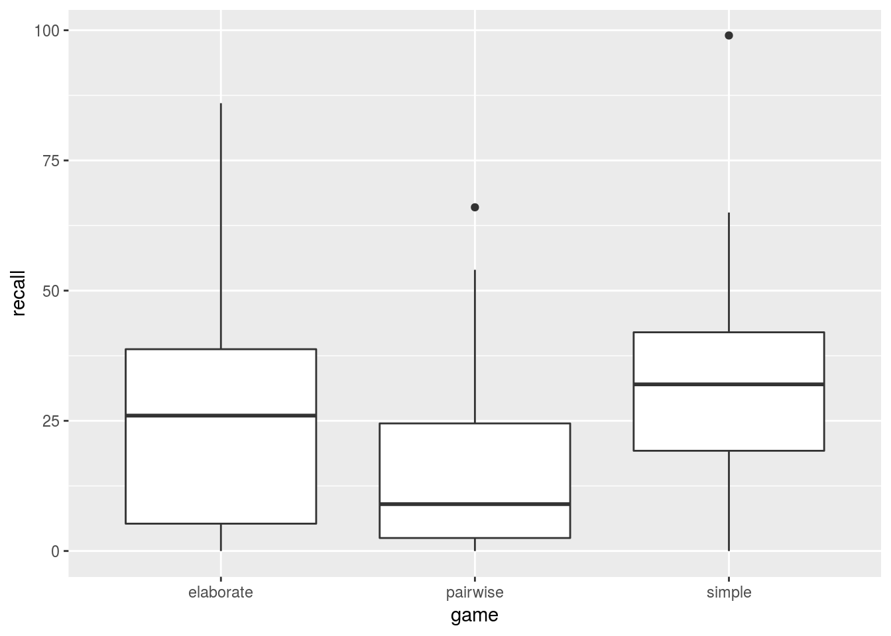
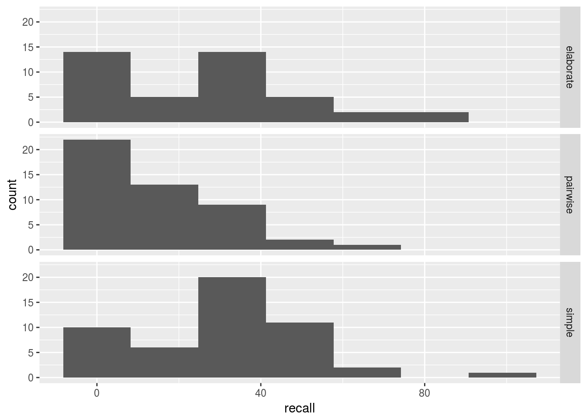

Testing means and medians
Introduction
The data set that inspired this post comes from this edition of Mendenhall and Sincich. It comes from an investigation of how you learn people’s names effectively. 139 students were randomly divided into three groups, and had to learn the first and last names of all the people in the group they had been randomized to (between 40 and 50 other students). The study investigated three methods of learning names:
pairwise: the students were divided into pairs, and the students in each pair had to learn each others’ names well enough to introduce their partner to all the people in the group. (You could imagine that this was like a control group.)
simple name game: the first student gives their own name, the second student repeats the first name and gives their own, the third student repeats the first two names and then gives their own name, and so on. (Presumably the other students in the group could help if someone forgot one of the previous names.)
elaborate name game: like the simple name game, but each student when giving their name also stated their favourite activity, which also had to be repeated along with the name. (The intention was to see whether adding an activity helped with recall of the name; you might imagine that seeing a person and happening to remember “this is the person who likes backgammon” could help with recalling their name.)
After all this, one year later, all the participants received photographs of all the people in their group, and were asked to give everyone’s name, and the percent correctly recalled was recorded. (The groups were not quite the same size.)
With one categorical variable game (the name-learning method used in the group) and one quantitative variable recall, you might imagine that a one-way analysis of variance would be called for.
The data are here, space delimited.
Reading the data and graphical assessment
We start with the usual, and use read_delim from readr to read in the data:The original data source has aligned columns for which read_table works, but I did some editing.
library(tidyverse)
library(smmr) # see belowmy_url="https://www.utsc.utoronto.ca/~butler/c32/namegame.txt"
names=read_delim(my_url, " ")## Parsed with column specification:
## cols(
## game = col_character(),
## recall = col_integer()
## )names## # A tibble: 139 x 2
## game recall
## <chr> <int>
## 1 simple 24
## 2 simple 43
## 3 simple 38
## 4 simple 65
## 5 simple 35
## 6 simple 15
## 7 simple 44
## 8 simple 44
## 9 simple 18
## 10 simple 27
## # ... with 129 more rowsInvestigation of the data reveals that we have all three games, as well as the correct 139 rows.
In with my lecture notes on making graphs in R, I give my students a slide that says what kind of graph is useful for each number of variables that are categorical or quantitative. My recommendation for one quantitative and one categorical is side-by-side boxplots, thus:
ggplot(names, aes(x=game, y=recall))+geom_boxplot()
I recommend this because boxplots tell you something about centre, spread and shape, which are the kind of initial interest you might typically have. Here, you see that average recall for pairwise was quite a bit lower than for simple or elaborate, which are quite similar to each other. In addition, there is some right-skewness, as evidenced by the long upper tail (whisker) on elaborate, and the upper outliers on each of the other two groups.
I am not surprised by the skewness, since recall (a percentage) was typically rather small, but cannot be less than zero, and variables are often skewed away from a limit (and there really were students who recalled none of the names, so the lower limit does come into play).
Currently playing: Mozart’s piano concerto no. 22, which is my favourite despite being one of his less famous examples of the genre.
Another plot that you might make here is a histogram for each group, placed side by side. To do that in ggplot, the mechanism is called facets. Since I want to compare the three histograms, I’ll place them one above the other in a vertical column:
ggplot(names, aes(x=recall))+
geom_histogram(bins=7)+
facet_grid(game~.)
The skewness/outliers is evident again, along with something interesting in the shape for elaborate that we’ll come back to later.
A couple of remarks:
geom_histogram() requires a number of bins (or a bin width) for the histogram(s). There is no default, because Hadley wisely says that you should be prepared to try different numbers of bins until you find one that tells the story of the data. Seven bins was actually my first guess, and it seems to have come out well. It actually came from
Sturges’ rule, which I can calculate in my head: round up the per-group sample size to the next power of 2 (\(2^6=64\), since there were about 45 in each group), take that power (6) and add 1. It comes from an assumption of normality, and tends to give too few bins otherwise (see Rob Hyndman’s paper in the references below). The Freedman-Diaconis rule tends to give a more realistic number of bins, especially for large samples. But I can’t do it in my head.
When you want to arrange the histograms according to the values of a categorical variable, facet_grid is the thing. It takes a model formula where the variable controlling up and down is the \(y\) and the one controlling left-right is \(x\). If either of those is missing, we use a dot, as I did here with the \(x\).
Analysis of variance
Analysis of variance assumes normally distributed data within each group, with equal variances. Our boxplots suggested that this was questionable because of the skewness, but we do have 45 or so observations in each group, so we may be able to trade on “approximately normal with approximately equal spread”, shrug our shoulders and carry on. As I say to my students, “make a call and defend it”. If it’s a defensible call, I’m good with it. Decide for yourself whether you think this is defensible:
names.1=aov(recall~game, data=names)
summary(names.1)## Df Sum Sq Mean Sq F value Pr(>F)
## game 2 6110 3054.9 7.687 0.000687 ***
## Residuals 136 54046 397.4
## ---
## Signif. codes: 0 '***' 0.001 '**' 0.01 '*' 0.05 '.' 0.1 ' ' 1The P-value on the \(F\)-test is very small, so there is no doubt that the group means are not all the same. But which groups differ from which? This is where Tukey’s method comes in, thus:
TukeyHSD(names.1)## Tukey multiple comparisons of means
## 95% family-wise confidence level
##
## Fit: aov(formula = recall ~ game, data = names)
##
## $game
## diff lwr upr p adj
## pairwise-elaborate -11.086626 -21.117011 -1.056241 0.0263823
## simple-elaborate 4.425714 -5.461648 14.313076 0.5400915
## simple-pairwise 15.512340 5.915062 25.109619 0.0005681This compares each pair of groups with each other, with P-values properly adjusted for the multiple comparisons. The pairwise method is significantly worse than the other two, which are not significantly different from each other. If we were going to recommend a method for name-learning, we’d recommend either simple or elaborate, but definitely not pairwise.
Mood’s median test
If we are bothered by the non-normality, what can we do instead? One possibility is a transformation, followed by the usual ANOVA on the transformed data. Another possibility is the Kruskal-Wallis test, but this comes with its own assumptions: that the distributions within each group are the same apart from a difference in median. I’m always bothered by this (and similarly by the assumption of symmetry in the signed-rank test), and would prefer not to have a test with assumptions that I have trouble remembering. I want, in the end, as assumption-free a test as I can get if the normal-theory one is no good.
Hence, Mood’s median test. It’s kind of a multiple-group version of the sign test. It goes like this:
- find the median of all the data combined
- count up the number of data values above and below the overall median within each group (throwing away any exactly equal to the median)
- do a chi-squared test of association between group and above/below.The group sizes are known, and there should be the same total number of values above and below the overall median, so the margins are fixed, and you could justifiably do Fisher’s exact test rather than chi-squared.
If the group medians were the same, there would be about a 50-50 split of values above and below the overall median in each group, and the chi-squared test would be non-significant. If the medians differ, there will be an imbalance: some groups will have the majority of observations above the median, and others the majority below.
I wrote a package smmr to do this:This is the one time I mastered that enquo and !! stuff, as evidenced by the unquoted variable names.
names %>% median_test(recall, game)## $table
## above
## group above below
## elaborate 23 19
## pairwise 12 35
## simple 34 14
##
## $test
## what value
## 1 statistic 1.996337e+01
## 2 df 2.000000e+00
## 3 P-value 4.623911e-05median_test comes from smmr. devtools::install_github("nxskok/smmr"") will install it.
The P-value is actually a little smaller than for the ANOVA, and the conclusion is the same: the group medians are not all the same. The pairwise group has most of its recall below the overall median, and the other two groups have most of the values above.
What Mood’s median test does not give you is something like Tukey controlled for multiple testing. The easiest way to make something seems to be to do Mood’s median test on all the pairs of groups, and then adjust the P-values by something like Bonferroni to account for the multiple testing.
I’m thinking there’s one of those list-column things starting with this that would do this smoothly:
names %>% nest(-game)## # A tibble: 3 x 2
## game data
## <chr> <list>
## 1 simple <tibble [50 × 1]>
## 2 elaborate <tibble [42 × 1]>
## 3 pairwise <tibble [47 × 1]>but in the spirit of not overheating my brain, I’m going to physically pull out the pairs of groups I want using filter and copy-paste. Previously, simple and elaborate were not significantly different:
names %>% filter(game=="simple" | game=="elaborate") %>%
median_test(recall, game)## $table
## above
## group above below
## elaborate 18 24
## simple 27 21
##
## $test
## what value
## 1 statistic 1.6071429
## 2 df 1.0000000
## 3 P-value 0.2048939This does a two-sample Mood’s median test on just these two groups, and finds them not significantly different. As you see, both groups are pretty close to 50-50 above and below the overall median (of just those two groups).
So let’s compare simple and pairwise. These we found different before (comparing the means):
names %>% filter(game=="simple" | game=="pairwise") %>%
median_test(recall, game)## $table
## above
## group above below
## pairwise 12 34
## simple 36 14
##
## $test
## what value
## 1 statistic 2.020174e+01
## 2 df 1.000000e+00
## 3 P-value 6.968955e-06and different again, regardless of what adjustment we need to do to the P-value (eg. comparing it with \(0.05/3\) for a Bonferroni adjustment).
Finally, elaborate and pairwise, which were also different before:My third paste, so I’m supposed to have turned this into a function by now.
names %>% filter(game=="elaborate" | game=="pairwise") %>%
median_test(recall, game)## $table
## above
## group above below
## elaborate 23 18
## pairwise 21 25
##
## $test
## what value
## 1 statistic 0.9462129
## 2 df 1.0000000
## 3 P-value 0.3306851Wait, what? Not significantly different, and close to 50-50 above and below? But the means and medians were a long way different:
names %>% group_by(game) %>%
summarize(means=mean(recall), medians=median(recall))## # A tibble: 3 x 3
## game means medians
## <chr> <dbl> <dbl>
## 1 elaborate 26.2 26.0
## 2 pairwise 15.1 9.00
## 3 simple 30.6 32.0How can that happen? (The medians for these two groups are even further apart than the means.) How is it that such different medians can produce such non-unbalanced frequencies?
Let’s take a look at the histograms again. The ones we want to compare are the top two:
ggplot(names,aes(x=recall))+
geom_histogram(bins=7)+
facet_grid(game~.)pairwise has your standard right-skewed shape, but something that we don’t see from the boxplots is that elaborate is bimodal: some people have moderate-good recall, and some people’s recall is very poor, with nothing much in between. The median for elaborate is in that second tall peak, and the mean is also pulled upwards by the skew, so that the mean and median for elaborate and pairwise look very different even though the majority of the data values are fairly similar. This last point is what Mood’s median test is actually assessing, even though I billed it as a test for medians: the overall median for these two groups is this:
names %>% filter(game!="simple") %>% summarize(med=median(recall))## # A tibble: 1 x 1
## med
## <int>
## 1 13The elaborate group actually has a lot of recall values below 13 (those ones in the first peak), because there’s a shortage of values in elaborate between the small ones and the big ones.
Conclusions
I don’t quite know what this all means. When I first did this analysis, I had to go back and physically check the non-significant Mood’s median test for elaborate and pairwise, because I didn’t believe it, but the shape of the data means in the end that it is not surprising that it came out this way: the median is bigger, but most of the data is not. Students who did the elaborate name game had good recall often enough to bring the median and mean up, but sometimes had poor recall.
So Mood’s median test offers some insight that ANOVA+Tukey did not.
So is elaborate really better than pairwise, or not? Make a call and defend it!